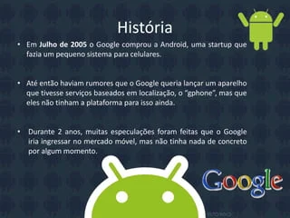
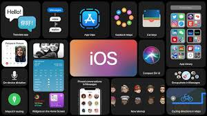

O que é sistema operacional
O sistema operacional é um software, ou conjunto de softwares, cuja função é administrar e gerenciar os recursos de um sistema, desde componentes de hardware e sistemas de arquivos a programas de terceiros, estabelecendo a interface entre o computador e o usuário.
O que é kernel
Função do Kernel. O Kernel, núcleo do sistema, é responsável por conectar o software ao hardware. Desta forma, ele estabelece uma comunicação eficaz entre os recursos do sistema operacional e administra suas funções.
Exemplos de Sistemas operacionais
O Android é um sistema operacional móvel desenvolvido pela Google. Ele foi inicialmente lançado em setembro de 2008 e desde então se tornou o sistema operacional mais usado no mundo em dispositivos móveis, como smartphones e tablets. Neste artigo você vai conhecer mais sobre ele e descobrir por que ele é tão utilizado.

Os Apps IOS mobiles (mobile App) funciona através de um software instalado no smartphone que roda sem pausas no sistema operacional, desenvolvido apenas para dispositivos portáteis, ou seja, para o iPhone.
